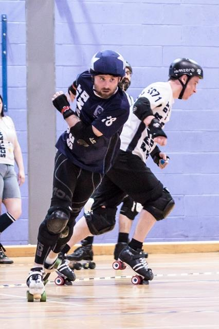

Capital City get ready for their bout - interview with team captain Tequila Jammer
Capital City have been busy since the announcement of their first home bout/Edinburgh's first ever Men's derby headline bout and launch their crowd funder campaign to help raise funds to put on the event. I caught up with team Captain Tequila Jammer to find out about their crowd funder and how things are going, on the run up to the bout.
Since you announced your first home and mens game, everyone must be pretty excited, it has been a long time coming.
Pretty excited?! We're positively fizzing with excitement! Seriously, it's been a long hard road to build the league, recruit members and train hard to a standard that we can play but we're finally there and ready to show everyone what we got.
Organising your first bout is time consuming and takes a lot of effort from everyone, how long have you all been planning this?
We've got some of the most dedicated skaters, organisers and just generally awesome people you could possibly meet so organising hasn’t been too much of a stress with everyone chipping in but this has been in the works for a long time - it was one of our main goals this year from our AGM.
 Picture by Dave McAleavy
Picture by Dave McAleavy
It’s great to see you working with ARRG to make your bout a double header with their Cannon Belle’s taking on Malmö's Crime City Rollers B in the opening game. Had you always planned to make the game a double header?
Not initially but we’re always happy to work with other leagues to put on the best possible show. Having, ARRG, Bristol and an international element will be sure to do that.
In a novel approach and a first for Scottish Roller Derby, you have decide to crowdfund to help raise money for the bout. What was the catalyst for you to try this way to raise funds?
Funding your first game is ridiculously expensive… well in Edinburgh anyway. With hall costs being close to £1000 as well as added extras, we needed a cool way to generate cash to put on a great show. Crowdfunding has worked well in the past for some of our members so we thought why not try it.
On your crowdfund page you have a lot of options for people to purchase and in a bold move you even put up your skate out song as an option to purchase. Was it difficult to find a balance of the right amount of items and what items you have on offer?
Ahhhhh… the perks. Well, we tried to have something for everyone; for the person who couldn’t make it but wanted to support us to the fully fledged life long fan. We tried to make them fun or unique like a custom made uniform or blowing the first whistle… but, yeah you’re right the skate out was a gamble. It’s gone now too… hopefully it won’t be too embarrassing, whatever it is.
You detail how much you want to raise on your page and how that breaks down for the bout. Of that the vast majority (around three quarters) is attributed to hall cost. Has this been a barrier to you putting on a bout previously?
One word. Yes. Edinburgh is ridiculously expensive for hall costs. That’s if you can find a proper venue. Luckily ARRG have paved the way for us with their frequent use of Meadowbank Stadium (thank you ARRG), just without having that initial cash it’s hard to kick start home bouts.
If the crowdfunder is a success and you reach your total, will we see Capital City use this method again to help raise funds for your next bout?
Hopefully we’ll be able to use the proceeds from tickets and merch to put up the money for our next home game but never say never. We also have a number of other fundraising ideas… heard of a car wash? What about a skate wash?
 Picture by Laura MacDonald
When Capital Chums took to the track to take on The Belter Skelpies it was the first bout for a few of the Capital City boys. On game day against the Vice Quads will we be meeting any new Unicorns for the first time?
A number of new and old faces will be making appearances. I am proud to say all of our skaters will be CCRD members (with the exception of one Bish Bash Josh who recently transferred back to his old hunting grounds of Manchester). We can expect to see some of our Fresh Meat take to the track as well as some faces you might recognise minus the stripes. I’ll also be taking to the track for the first time with CCRD as I Benched our last Capital Chums game… EXCITING!
Its less than 2 months till the big day, what are all the Capital City boys doing to get ready to take on the Vice Quads?
It’s tough to fit in training with limited hall hours but we’ve developed a cohesive training programme that lets Fresh Meat integrate quickly into some more advanced drills. Also working together for just under 2 years has given us a bit of a pack mentality and we know what each other is capable of. Other than that it’s train, train, train: strong walls, agile jammers and kick ass endurance.
Can you tell everyone what to expect from Capital City at their first bout?
We are going to be lean, mean, bad assed, mighty Unicorns! Definitely vocal, strong defence with a few cheeky moves to mix things up. Hey, it’s pretty near Christmas so there might be an apex jump or two.
Capital City will be taking on Bristol's Vice Quads on the 29th of November, to find out more information about the event please visit the event page below: https://www.facebook.com/events/331510057008876/?fref=ts For more information or if you ant to pledge to their crowd funder campaign then please visit: https://www.indiegogo.com/projects/capital-city-roller-derby-s-double-header-29-11-14

{kind=link}